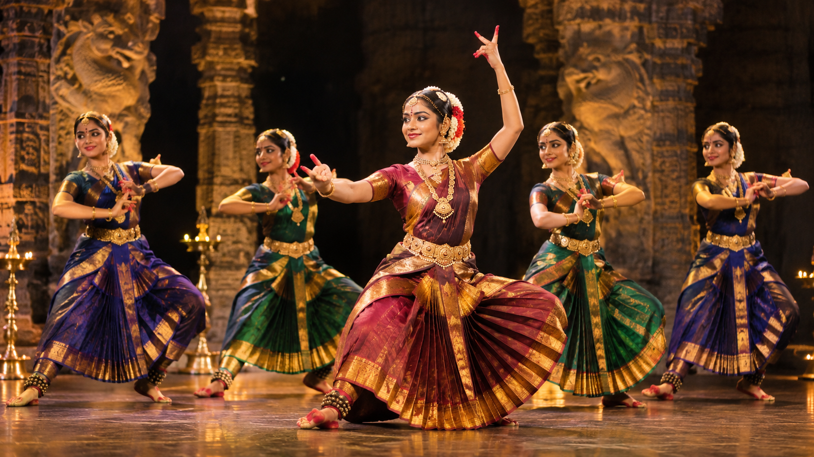
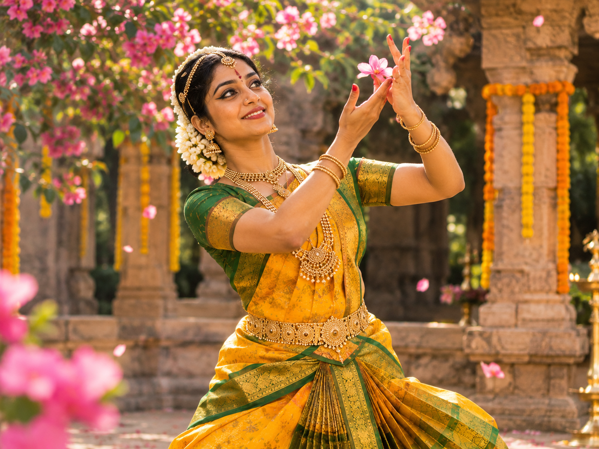

THE SACRED ART OF
Bharatanatyam &
CLASSICAL DANCE.
Immerse yourself in centuries of temple art, pure rhythm (Nritta), and evocative storytelling (Abhinaya). Structured training by renowned Gurus leading to Arangetram solo debuts.
BHAVA. RAGA. TALA. ETERNAL TRIAD OF DEVOTION.
Classical Indian dance is not mere choreography; it is an offering of the body, mind, and spirit to Lord Nataraja. At Nrityanjali, students discover the geometric grandeur of South Indian temple sculptures brought to vibrant life. Through meticulous Guru-guided sadhana, disciples master intricate footwork, rhythmic solkattus, and deeply emotional abhinaya.
THE 4-STAGE BHARATANATYAM JOURNEY
From foundational Aramandi posture to the glorious two-hour solo Arangetram debut with live Carnatic orchestra.
ADAVU FOUNDATION & ARAMANDI
Master the 64 basic Adavus (Tatta, Natta, Kuditta Mettu, Sarukkal), strict diamond Aramandi geometric posture, and crisp eye-hand coordination (Drishti Bheda).
HASTHAS, TALA & BASIC MARGAM
Study the 28 Asamyuta and 24 Samyuta Hastha Mudras from Abhinaya Darpana, complex Korvais, and perform early Margam pieces: Alarippu, Jatiswaram, and Shabdam.
THE GRAND VARNAM & ABHINAYA
Conquer the crowning centerpiece of Bharatanatyam — the 45-minute Varnam combining intricate teermanam footwork with nuanced emotional storytelling (Sanchari Bhava).
SOLO CONCERT & LIVE ORCHESTRA
Ascend the professional concert stage in a full 2.5-hour solo graduation recital accompanied by master Nattuvanar, Mridangist, Carnatic vocalist, violinist, and flautist.
ACADEMY PERFORMANCES & SACRED SPACES
An editorial glimpse into our disciples' stage debuts, temple Natyanjali festivals, and intense studio sadhana.



EXPLORE THE MARGAM & TECHNIQUE
Experience how disciples master posture, hand mudras, rhythmic teermanams, and evocative abhinaya step-by-step.

Aramandi Stance & Geometric Precision
Master the foundational half-seated posture (Aramandi/Ayata Mandala), erect spine, grounded heels, and horizontal knee alignment described in the Natya Shastra.
The Aramandi posture creates the sacred triangular geometry essential to Bharatanatyam, training deep quadricep endurance and rhythmic stability for fast-paced teermanams.
FESTIVALS OF DANCE THROUGH THE YEAR
Our training cycles evolve with classical performance seasons, temple festivals, and masterclasses.
Vasantotsav — Spring Dance Festival & Padam Repertoire
Celebrate renewal with delicate Ashtapadis, Jayadeva's Gita Govinda, soft rhythmic alarippus, and devotional invocations honoring nature and the divine.

THE SACRED ARANGETRAM DEBUT.
The Arangetram marks a disciple's baptism into the professional concert stage — a 2.5-hour solo recital with live Carnatic orchestra that showcases years of devotion.
- Comprehensive 12-Month One-on-One Mentorship
- Salangai Pooja & Sacred Temple Consecration
- Live 5-Piece Carnatic Orchestra (Vocal, Mridangam, Violin, Flute, Nattuvangam)
- Complete 8-Item Traditional Margam Repertoire Coaching

THE SACRED SCIENCE OF BHARATA'S NATYA SHASTRA.
Bharatanatyam is rooted in Sage Bharata's 2,000-year-old treatise. We do not teach superficial dance; we instill the comprehensive philosophical, anatomical, and rhythmic foundations of Indian classical aesthetics.
Master bodily expression through hastas, caris, and mandalas, paired with lyrical recitation and tala knowledge.
Learn to awaken the nine classical sentiments: Shringara (love), Hasya (joy), Karuna (compassion), Raudra (anger), Vira (courage), Bhayanaka, Bibhatsa, Adbhuta, and Shanta.

TESTIMONIALS FROM OUR DANCE FAMILY
Read reflections from students and parents whose lives have been transformed through classical sadhana.
"Completing my solo Arangetram under Guru Vidushi Meenakshi was the most spiritually elevating experience of my life. The rigorous stamina training and orchestra rehearsals prepared me for every second on the stage."
"Our daughter started at age 6 in the Prarambhik Adavu batch. The discipline, posture, cultural grounding, and confidence she gained here is unmatched. The student portal lets us track every class and rehearsal schedule easily!"
"The attention to geometric precision in Aramandi and the depth of Abhinaya taught at Nrityanjali is truly extraordinary. Learning the Sollukattu recitation alongside live percussion has deepened my musical rhythm."